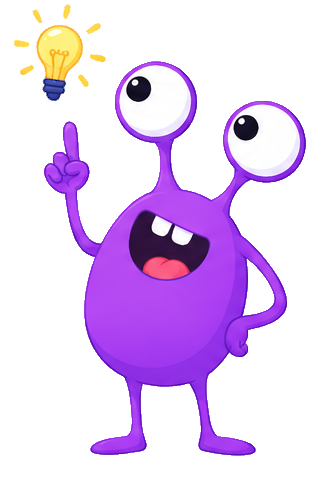

Сценарий 1
Облака — это скопления мельчайших капелек воды и кристалликов льда.
Шаг 1 из 3
☀️
Температура: выше 0 °C (тепло)
💡
Главный вывод:
Дождь — это вода в жидком состоянии.
Луи с планеты Терра-5:
Смотри! Солнышко нагрело воду, и тёплый пар поднимается вверх в облако!
